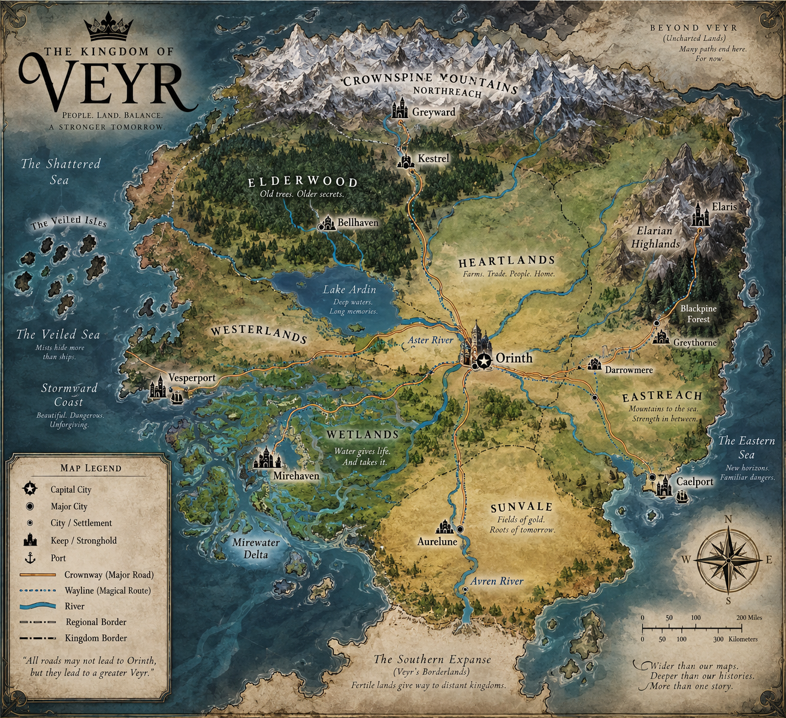
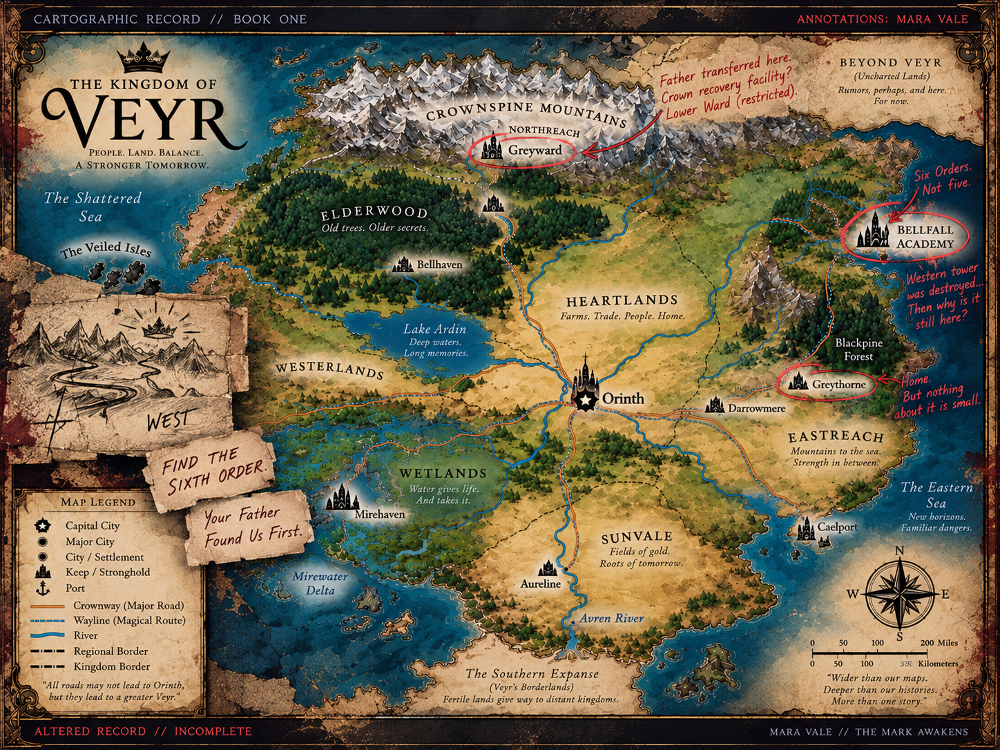

ACADEMIC INSTITUTION
Bellfall Academy
An ancient academy where students bearing recognized Marks are trained within one of Veyr's Five Orders.
REGION: EASTREACH
STATUS: ACTIVE
CROWN CARTOGRAPHIC ARCHIVE
“All roads may not lead to Orinth, but they lead to a greater Veyr.”
Across mountains, forests, wetlands, coastlines, and old roads, the kingdom of Veyr carries centuries of history beneath its surface. Some places stand proudly on Crown maps. Others are easier to overlook.

Crown records are maintained for accuracy, navigation, and the preservation of Veyr's recognized history.
CARTOGRAPHIC RECORDS
The Crown maintains the official maps of Veyr. Other records are considerably less obedient.
GENERAL RECORDS
The official public cartographic record of the Kingdom of Veyr.
VIEW PUBLIC RECORD →BOOK ONE
Mara Vale's cartographic record following the events of Book One.
OPEN ARCHIVE →BOOK TWO
Cartographic record unavailable for public access.
BOOK THREE
Cartographic record unavailable for public access.
BOOK FOUR
Cartographic record unavailable for public access.
BOOK FIVE
Cartographic record unavailable for public access.
CROWN ARCHIVE // LOCATION RECORDS
From ancient institutions to distant strongholds, every corner of Veyr carries a story.
ACADEMIC INSTITUTION
An ancient academy where students bearing recognized Marks are trained within one of Veyr's Five Orders.
CROWN CAPITAL
The political heart of Veyr and seat of the Crown, where government, history, and power converge.
FOREST REGION
An old and sprawling forest where roads thin, settlements grow farther apart, and history has deep roots.
CROWN STRONGHOLD
A remote fortress built into the northern mountains, far from the ordinary roads and cities of Veyr.
REGIONAL TERRITORY
A vast region of waterways, marshes, settlements, ferries, and roads shaped as much by water as by land.
REGIONAL TERRITORY
Veyr's western reaches, connected by old roads, coastal routes, settlements, and long stretches of open country.
REGIONAL TERRITORY
The broad southern lands of Veyr, crossed by roads and rivers beneath warmer skies.
REGIONAL TERRITORY
Mountain country stretching toward the Eastern Sea, where inland roads eventually meet Veyr's eastern coast.
MARA VALE // CARTOGRAPHIC RECORD 01
The official map wasn't wrong.
That would have been easier.

BOOK ONE // RECOVERED EVIDENCE
Records survive in strange ways. A missing name. A scratched-out route. An inventory that remembers one banner too many.
CEREMONIAL INVENTORY
Six ceremonial banners are listed in Bellfall's inventory. The sixth entry has been cut from the record.
Six Orders. Not five.
ORIENTATION MAP
An older Bellfall orientation map shows six tower routes. One has been scratched out.
You don't scratch out a road to somewhere that never existed.
MAINTENANCE RECORD
Sixth Order students were assigned to stabilization rotations within Bellfall.
They trained here. Officially.
ARCHITECTURAL SURVEY
The western tower was recorded as destroyed during the Night.
The western tower is still standing.
LIORA'S NOTE // “Then why is it still here?”
FACULTY & ORDER RECORDS
Bellfall's surviving records contain gaps where the Sixth Order should appear.
Missing isn't the same as never there.
ACTIVE LEADS // BOOK ONE
Crown recovery facility. Mara's father was transferred here. The Lower Ward is restricted.
My father was transferred here.
Mountains. A river disappearing beneath a dark line. No city. No kingdom. No explanation.
Your Father Found Us First.
Remaining cartographic records unavailable.
CROWN CARTOGRAPHIC ARCHIVE // PUBLIC RECORD COMPLETE
No additional settlements require public classification.